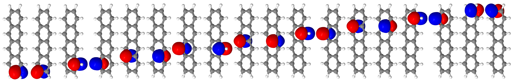
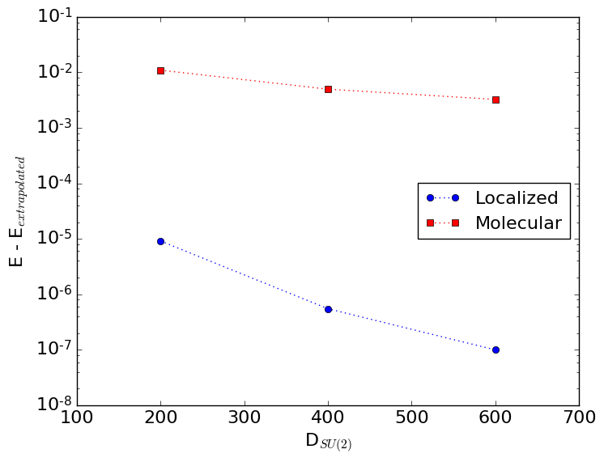

12. DMRG workshop (12-jul-2016): hands-on session¶
12.1. Introduction¶
The geometry of tetracene was optimized at the restricted B3LYP/6-31G* level of theory, and can be found in the file tetracene.fcidump.in:
memory 28 Gb
molecule tetracene {
0 1
symmetry csz
C 4.888883611380 -0.715374463486 -0.000000000000
C 4.888883611380 0.715374463486 0.000000000000
C -4.888883611380 -0.715374463486 0.000000000000
C -4.888883611380 0.715374463486 -0.000000000000
C 3.711144499602 -1.409316610825 0.000000000000
C 3.711144499602 1.409316610825 0.000000000000
C -3.711144499602 -1.409316610825 0.000000000000
C -3.711144499602 1.409316610825 0.000000000000
C 2.450542389320 -0.725895641808 0.000000000000
C 2.450542389320 0.725895641808 0.000000000000
C -2.450542389320 -0.725895641808 0.000000000000
C -2.450542389320 0.725895641808 0.000000000000
C 1.235393613403 -1.406341384439 -0.000000000000
C 1.235393613403 1.406341384439 -0.000000000000
C -1.235393613403 -1.406341384439 0.000000000000
C -1.235393613403 1.406341384439 -0.000000000000
C 0.000000000000 -0.726150477978 0.000000000000
C -0.000000000000 0.726150477978 -0.000000000000
H -5.836431028249 1.247257941939 0.000000000000
H -5.836431028249 -1.247257941939 -0.000000000000
H 5.836431028249 -1.247257941939 0.000000000000
H 5.836431028249 1.247257941939 -0.000000000000
H 3.708923113951 -2.496817544333 0.000000000000
H 3.708923113951 2.496817544333 0.000000000000
H -3.708923113951 -2.496817544333 -0.000000000000
H -3.708923113951 2.496817544333 0.000000000000
H 1.235230564126 -2.494555353711 0.000000000000
H 1.235230564126 2.494555353711 0.000000000000
H -1.235230564126 2.494555353711 0.000000000000
H -1.235230564126 -2.494555353711 0.000000000000
}
sys.path.insert( 0, './..' )
import fcidump
set basis 6-31g*
set reference rhf
set scf_type DIRECT
set e_convergence 1e-12
set d_convergence 1e-10
set ints_tolerance 0.0
set fcidump dumpfilename tetracene.fcidump
E, wfn = energy( 'fcidump', return_wfn=True )
molden( wfn, 'tetracene.molden' )
The goal of this afternoon is to calculate the vertical singlet-triplet gap with DMRG(18, 18)-CASPT2/6-31G*.
chemps2 is a C++ library for spin-adapted DMRG calculations which can be incorporated in quantum chemistry packages. This has been done for psi4. Alternatively, the same functionality can be used with the binary, when the required matrix elements have been generated in FCIDUMP format. We will follow the second route this afternoon. The advantage of the latter route is that you are not tied to psi4 to obtain matrix elements. In the future you can use molcas, molpro, dalton... The disadvantage is that a full-rank FCIDUMP file is required, and that less virtual (secondary) orbitals can be used than with density-fitted DMRG-SCF and DMRG-CASPT2.
12.2. UGent HPC¶
Follow the instructions to log in to the UGent HPC.
Submit an interactive job in the XYZ queue:
$ qsub -I -W x=FLAGS:ADVRES:dmrg.198 -l walltime=06:00:00 -l nodes=1:ppn=8
Once you are on the node, change directory to, for example, the following folder:
$ cd $VSC_SCRATCH_NODE
$ mkdir dmrg_workshop
$ cd dmrg_workshop/
Please keep in mind that you will need about 21 Gb of disk for the FCIDUMP file and chemps2 checkpoints!
12.3. FCIDUMP and MOLDEN¶
We will first use a plugin to psi4 to generate the RHF matrix elements in FCIDUMP format, as well as the corresponding MOLDEN file. As said before, any other program which is able to generate these two types of files can be used as well. Load the psi4 module and generate a new plugin called fcidump:
$ module load PSI4/1.0-intel-2016a-mt-Python-2.7.11
$ psi4 --new-plugin fcidump
Overwrite the dummy file fcidump.cc and compile:
$ cd fcidump/
$ rm fcidump.cc
$ wget 'https://github.com/sebwouters/chemps2/raw/master/integrals/psi4plugins/fcidump.cc'
$ make
$ cd ../
The required FCIDUMP file and the corresponding MOLDEN file can now be generated with psi4:
$ wget 'https://github.com/sebwouters/chemps2/raw/master/sphinx/tetracene.fcidump.in'
$ OMP_NUM_THREADS=8 psi4 -n 8 tetracene.fcidump.in &
$ tail -n 3000 -f tetracene.fcidump.out
$ ls -alh TETRACENE.FCIDUMP
$ ls -alh tetracene.molden
Note that the specified symmetry group in tetracene.fcidump.in was csz, a subgroup of d2h. In the csz symmetry group, the 18 active space \(\pi\)-orbitals can be localized to the carbon atoms. This is not the case for the d2h symmetry group.
While you are waiting for the FCIDUMP file of size 20 Gb, you can already proceed with the next section.
Note
You can also use the precreated files from the folder /apps/gent/tutorials/DMRG/ instead:
$ ls -al /apps/gent/tutorials/DMRG/tetracene.fcidump.in
$ ls -al /apps/gent/tutorials/DMRG/tetracene.fcidump.out
$ ls -al /apps/gent/tutorials/DMRG/TETRACENE.FCIDUMP
$ ls -al /apps/gent/tutorials/DMRG/tetracene.molden
12.4. Basis choice¶
Now that you have the required matrix elements in FCIDUMP format and the corresponding MOLDEN file, we can perform calculations with chemps2 v1.7.2. This module should have been loaded together with the psi4 module. If this was not the case, you can load it with:
$ module load CheMPS2/1.7.2-intel-2016a
Study the options of the binary:
$ chemps2 --version
$ chemps2 --help
Perform each calculation in a separate folder. This way checkpoint files will not get mixed up. Create a folder ci_input_orbs/ and in that folder an input file ci_input_orbs.in for chemps2 with the following options:
- Target the singlet ground state
- Use an (18, 18) active space
- Switch off the CASPT2 calculation
- Overwrite the tmp folder with the existing path
/local/NUMBER.master15.delcatty.gent.vsc/, whereNUMBERis the job number which you see with
$ qstat -n
- Perform one DMRG-SCF iteration, which corresponds to DMRG-CI
- The active space orbitals should be RHF molecular orbitals (i.e. the input orbitals)
- Use the convergence scheme
\(D_{SU(2)}\) \(E_{conv}\) \(N_{max}\) \(\gamma_{noise}\) \(r_{tol}\) 200 1e-6 10 0.05 1e-5 400 1e-6 10 0.05 1e-5 600 1e-6 10 0.05 1e-5 600 1e-8 3 0.0 1e-5 400 1e-8 3 0.0 1e-5 200 1e-8 3 0.0 1e-5
- Set the option
SCF_MOLDENto the corresponding molden file
When you have created the input file, you can double check with the solution.
Run the calculation:
$ cd ci_input_orbs/
$ OMP_NUM_THREADS=4 chemps2 --file=ci_input_orbs.in &> ci_input_orbs.out &
$ cd ../
Note that you have now only used 4 of the 8 cores available to you. Proceed with the inctructions below while waiting for the calculation to finish.
Create a folder ci_local_orbs/ and in that folder an input file ci_local_orbs.in for chemps2 which is identical to ci_input_orbs.in, except for the active space orbitals. These should now be localized orbitals. When you have created the input file, you can double check with the solution.
Run the calculation:
$ cd ci_local_orbs/
$ OMP_NUM_THREADS=4 chemps2 --file=ci_local_orbs.in &> ci_local_orbs.out &
$ cd ../
$ tail -n 300 ci_input_orbs/ci_input_orbs.out
$ tail -n 300 ci_local_orbs/ci_local_orbs.out
When the calculations are finished, take a look at the files
ci_input_orbs/tetracene.molden.rotatedci_local_orbs/tetracene.molden.rotated
with your favourite visualization software. Do the first 18 App or A" orbitals have the desired shape? How are they ordered? Once you have formulated your own answer, you can double check with the solution.
Compare the energies of the last three sweep instructions as a function of \(D_{SU(2)}\) for both calculations. Thereto you can grep for:
$ grep "Minimum energy encountered during the last sweep" ci_input_orbs/ci_input_orbs.out
$ grep "Minimum energy encountered during the last sweep" ci_local_orbs/ci_local_orbs.out
What do you observe? Can you explain it? Once you have formulated your own answer, you can double check with the solution.
12.5. DMRG-SCF¶
Use localized orbitals for the active space from now on. Perform the DMRG-SCF orbital optimization for the singlet and the triplet. Also put DIIS on when the update norm is smaller than 1e-2, switch PRINT_CORR to TRUE, and remove the SCF_MOLDEN line. Use the following convergence scheme:
\(D_{SU(2)}\) \(E_{conv}\) \(N_{max}\) \(\gamma_{noise}\) \(r_{tol}\) 250 1e-6 8 0.05 1e-5 500 1e-8 8 0.05 1e-5 750 1e-10 8 0.0 1e-8
Why is the reduced virtual dimension not lowered at the end of the DMRG calculation? Why is the last \(r_{tol}\) smaller? When you have created the input files, you can double check with the solution for the singlet and the triplet.
Run the calculation:
$ cd scf_singlet/
$ OMP_NUM_THREADS=4 chemps2 --file=scf_singlet.in &> scf_singlet.out &
$ cd ../scf_triplet/
$ OMP_NUM_THREADS=4 chemps2 --file=scf_triplet.in &> scf_triplet.out &
$ cd ../
$ tail -n 300 scf_singlet/scf_singlet.out
$ tail -n 300 scf_triplet/scf_triplet.out
What is the DMRG-SCF singlet-triplet gap you obtain? Double check with the solution.
Do you see polyradical character in the natural orbital occupation numbers for the singlet and/or triplet? How can you observe this in the correlation functions? Tip: It might be interesting to read
- Hachmann, J. J. Dorando, Michael Avilés and Garnet Kin-Lic Chan, Journal of Chemical Physics 127, 134309 (2007). doi link
which can also be found on the arXiv.
Note
If you are in a hurry or immediately want to start with the DMRG-CASPT2 calculations, you can also use the precreated checkpoints from the folder /apps/gent/tutorials/DMRG/:
$ cp /apps/gent/tutorials/DMRG/CheMPS2_CASSCF.h5.singlet scf_singlet/.
$ cp /apps/gent/tutorials/DMRG/CheMPS2_CASSCF.h5.triplet scf_triplet/.
12.6. DMRG-CASPT2¶
Note
DMRG-CASPT2 checkpoints can be used when you kill a calculation before it is finished, or to redo the DMRG-CASPT2 calculation with another IPEA or IMAG shift. In case you would like to use checkpoints for the DMRG-CASPT2 calculations, it is important that for subsequent runs exactly the same orbitals are used. Therefore, start from the converged DMRG-SCF checkpoint CheMPS2_CASSCF.h5 and do the following things:
- Put
SCF_DIIS_THRto0.0- Delete any checkpoints named
CheMPS2_DIIS.h5- Switch
SCF_ACTIVE_SPACEtoI
This ensures that for the subsequent DMRG-CASPT2 runs, exactly the orbitals from CheMPS2_CASSCF.h5 are used.
How large is the singlet-triplet gap with DMRG-CASPT2 when an IPEA shift of 0.0 and an IMAG shift of 0.0 are used? Is it best to use A or P for the option CASPT2_ORBS, and why? In your input file, also switch on the DMRG-CASPT2 checkpoint, because later we will redo the calculation with an IPEA shift of 0.25. Use the same convergence scheme as for the DMRG-SCF calculations.
Note
Sometimes a larger virtual dimension can be required for DMRG-CASPT2 as compared to DMRG-SCF, because the excited wavefunctions
are a linear combination over three matrix product states: \(\left| \Psi_0 \right\rangle\), \(\hat{E}_{sz} \left| \Psi_0 \right\rangle\), and \(\hat{E}_{zs} \left| \Psi_0 \right\rangle\). In practice, you should therefore check how the DMRG-CASPT2 second order energy in chemps2 varies with \(D_{SU(2)}\)!
When you have created the input files, you can double check with the solution for the singlet and the triplet.
Run the calculations, but please remember to copy over the converged DMRG-SCF orbitals:
$ cd pt2_singlet/
$ cp ../scf_singlet/CheMPS2_CASSCF.h5 .
$ OMP_NUM_THREADS=4 chemps2 --file=pt2_singlet.in &> pt2_singlet.out &
$ cd ../pt2_triplet/
$ cp ../scf_triplet/CheMPS2_CASSCF.h5 .
$ OMP_NUM_THREADS=4 chemps2 --file=pt2_triplet.in &> pt2_triplet.out &
$ cd ../
$ tail -n 300 pt2_singlet/pt2_singlet.out
$ tail -n 300 pt2_triplet/pt2_triplet.out
How large is the singlet-triplet gap with DMRG-CASPT2 when an IPEA shift of 0.0 and an IMAG shift of 0.0 are used?
And with an IPEA shift of 0.25 and an IMAG shift of 0.0?
12.7. Solutions¶
12.7.1. ci_input_orbs.in¶
FCIDUMP = /path/to/TETRACENE.FCIDUMP
GROUP = 3
MULTIPLICITY = 1
NELECTRONS = 120
IRREP = 0
EXCITATION = 0
SWEEP_STATES = 200, 400, 600, 600, 400, 200
SWEEP_ENERGY_CONV = 1e-6, 1e-6, 1e-6, 1e-8, 1e-8, 1e-8
SWEEP_MAX_SWEEPS = 10, 10, 10, 3, 3, 3
SWEEP_NOISE_PREFAC = 0.05, 0.05, 0.05, 0.0, 0.0, 0.0
SWEEP_DVDSON_RTOL = 1e-5, 1e-5, 1e-5, 1e-5, 1e-5, 1e-5
NOCC = 51, 0
NACT = 0, 18
NVIR = 171, 54
SCF_STATE_AVG = FALSE
SCF_DIIS_THR = 0.0
SCF_GRAD_THR = 1e-6
SCF_MAX_ITER = 1
SCF_ACTIVE_SPACE = I
SCF_MOLDEN = /path/to/tetracene.molden
CASPT2_CALC = FALSE
CASPT2_ORBS = A
CASPT2_IPEA = 0.0
CASPT2_IMAG = 0.0
CASPT2_CHECKPT = FALSE
CASPT2_CUMUL = FALSE
PRINT_CORR = TRUE
TMP_FOLDER = /local/NUMBER.master15.delcatty.gent.vsc/
12.7.3. tetracene.molden.rotated for the localized active space orbitals¶
For ci_local_orbs/tetracene.molden.rotated, the active space orbitals are localized on the carbon atoms, and are ordered according to the one-dimensional topology of the molecule.
12.7.4. Molecular vs. localized orbitals¶
12.7.5. scf_singlet.in¶
FCIDUMP = /path/to/TETRACENE.FCIDUMP
GROUP = 3
MULTIPLICITY = 1
NELECTRONS = 120
IRREP = 0
EXCITATION = 0
SWEEP_STATES = 250, 500, 750
SWEEP_ENERGY_CONV = 1e-6, 1e-8, 1e-10
SWEEP_MAX_SWEEPS = 8, 8, 8
SWEEP_NOISE_PREFAC = 0.05, 0.05, 0.0
SWEEP_DVDSON_RTOL = 1e-5, 1e-5, 1e-8
NOCC = 51, 0
NACT = 0, 18
NVIR = 171, 54
SCF_STATE_AVG = FALSE
SCF_DIIS_THR = 1e-2
SCF_GRAD_THR = 1e-6
SCF_MAX_ITER = 100
SCF_ACTIVE_SPACE = L
CASPT2_CALC = FALSE
CASPT2_ORBS = A
CASPT2_IPEA = 0.0
CASPT2_IMAG = 0.0
CASPT2_CHECKPT = FALSE
CASPT2_CUMUL = FALSE
PRINT_CORR = TRUE
TMP_FOLDER = /local/NUMBER.master15.delcatty.gent.vsc/
12.7.7. DMRG-SCF singlet-triplet gap¶
Both DMRG-SCF calculations are converged with 8 macro-iterations. The gap is
12.7.8. pt2_singlet.in¶
FCIDUMP = /path/to/TETRACENE.FCIDUMP
GROUP = 3
MULTIPLICITY = 1
NELECTRONS = 120
IRREP = 0
EXCITATION = 0
SWEEP_STATES = 250, 500, 750
SWEEP_ENERGY_CONV = 1e-6, 1e-8, 1e-10
SWEEP_MAX_SWEEPS = 8, 8, 8
SWEEP_NOISE_PREFAC = 0.05, 0.05, 0.0
SWEEP_DVDSON_RTOL = 1e-5, 1e-5, 1e-8
NOCC = 51, 0
NACT = 0, 18
NVIR = 171, 54
SCF_STATE_AVG = FALSE
SCF_DIIS_THR = 0.0
SCF_GRAD_THR = 1e-6
SCF_MAX_ITER = 100
SCF_ACTIVE_SPACE = I
CASPT2_CALC = TRUE
CASPT2_ORBS = A
CASPT2_IPEA = 0.0
CASPT2_IMAG = 0.0
CASPT2_CHECKPT = TRUE
CASPT2_CUMUL = FALSE
PRINT_CORR = TRUE
TMP_FOLDER = /local/NUMBER.master15.delcatty.gent.vsc/